Práctica 6.1 - Dockerización del despliegue de una aplicación Node.js
Despliegue con Docker
Empezamos con lo más básico de la práctica, clonar el respectivo repositorio: git colne https://github.com/raul-profesor/DAW_practica_6.1_2024.git
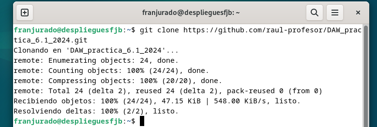
El repositorio contiene todo lo que necesitaremos para más adelante. Se recomienda instalar previamente la herramienta curl para evitar los problemas que yo he tenido al final.
Instalación de Docker
Antes de seguir, tenemos que instalar Docker. Para ello usaremos el comando:
sudo apt install -y docker.io
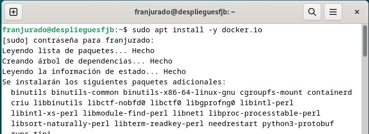
Archivo Dockfile
Ahora que tenemos instalado Docker nos tenemos que mover al directorio correspondiente y modificar el Dockerfile.
Tenemos que rellenar esos "huecos" libres y que quede de la siguiente forma:
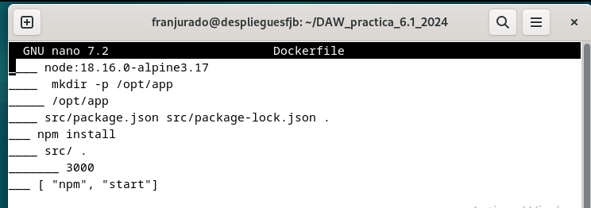
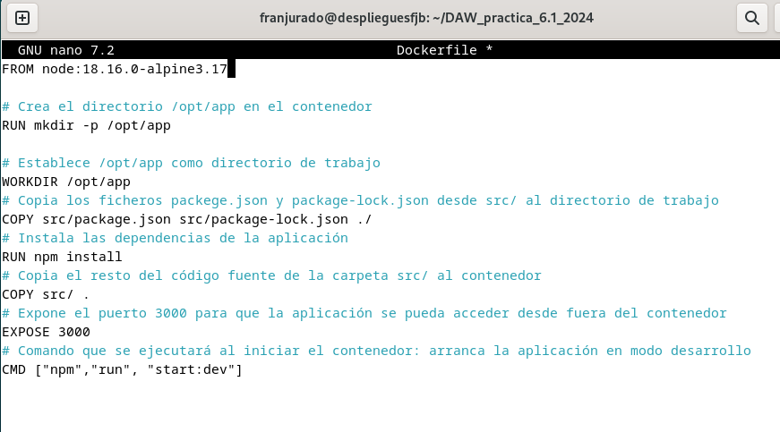
Donde con lo que completamos hará que:
RUN mkdir -p /opt/app: Crea el directorio /opt/app en el contenedor.WORKDIR /opt/app: Establece /opt/app como directorio de trabajo.COPY src/package.json src/package-lock.json ./: Copia ficheros package.json y package-lock.json desde el src/ al directorio de trabajo.RUN npm intsall: Instala las dependencias de la aplicación.COPY src/ .: Copia el resto del código de la carpeta src/ al contenedor.EXPOSE 3000: Expone el puerto 3000 para que la app se pueda acceder desde fuera del contenedor en sí.CMD ["npm", "run", "start:dev"]: Arranca la aplicación en modo desarrollo.
Construcción de la imagen
En el contexto actual del directorio de trabajo tenemos que hacer la build de la imagen, con el nombre librodirecciones.
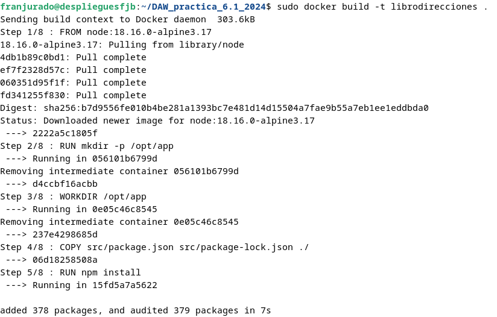
sudo docker build -t librodirecciones .
Lo siguiente será iniciar el contenedor en modo demonio, para ponerlo y que escuche las peticiones del puerto 3000 y que coincida con el puerto 3000 del contenedor en sí.
docker run -p 3000:3000 -d librodirecciones
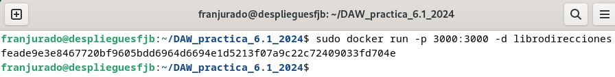
Si intentamos acceder a nuestro sitio web con nuestra correspondiente IP, veremos que se produce un error de conexión: Nuestra ip de la máquina virtual:
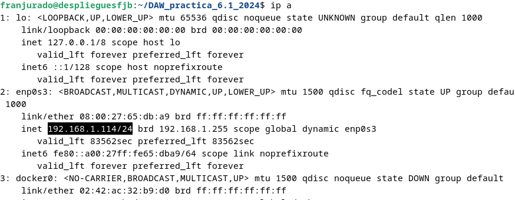
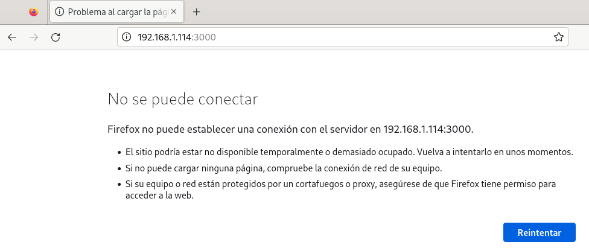
Docker Compose
Para continuar, instalaremos Docker Compose en nuestro sistema, usando el siguiente comando:
sudo apt install docker-compose
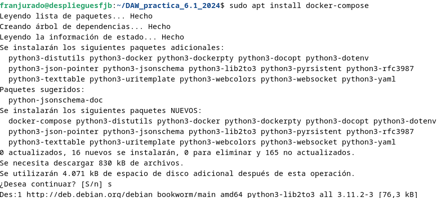
Y comprobamos la versión disponible de éste cuando lo hayamos instalado:
docker-compose --version
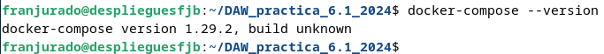
Si no estuviese el archivo docker-compose.yml deberemos crearlo en el directorio raíz de nuestro proyecto, donde hemos clonado el repositorio.
Tendría la siguiente sintaxis:
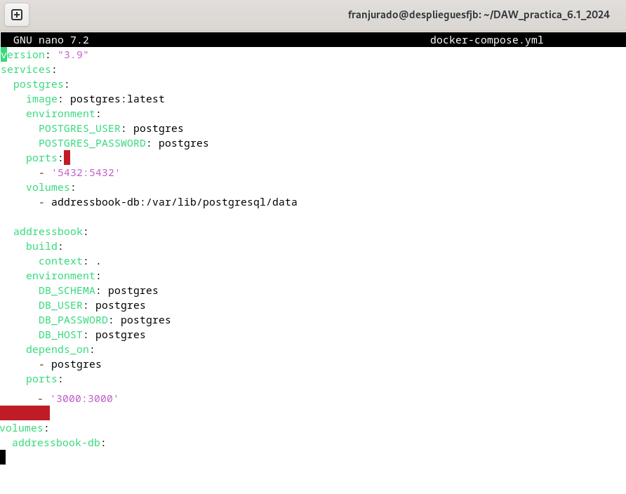
Antes de iniciar los contenedores, tenemos que crear una estructura para la base de datos, para ello tenemos que hacer uso del siguiente comando:
sudo docker-compose run addressbook nmp run migrate
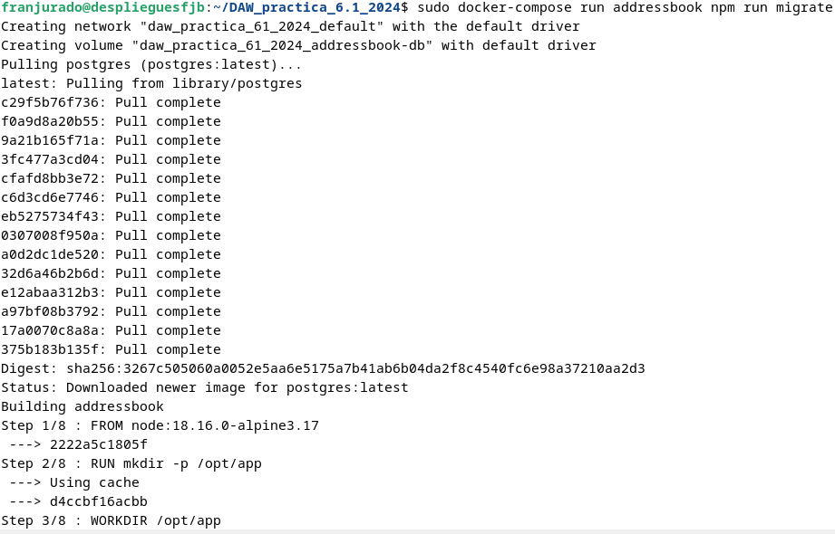 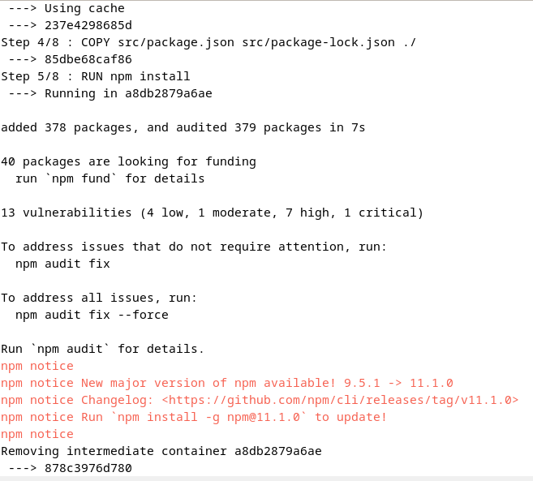 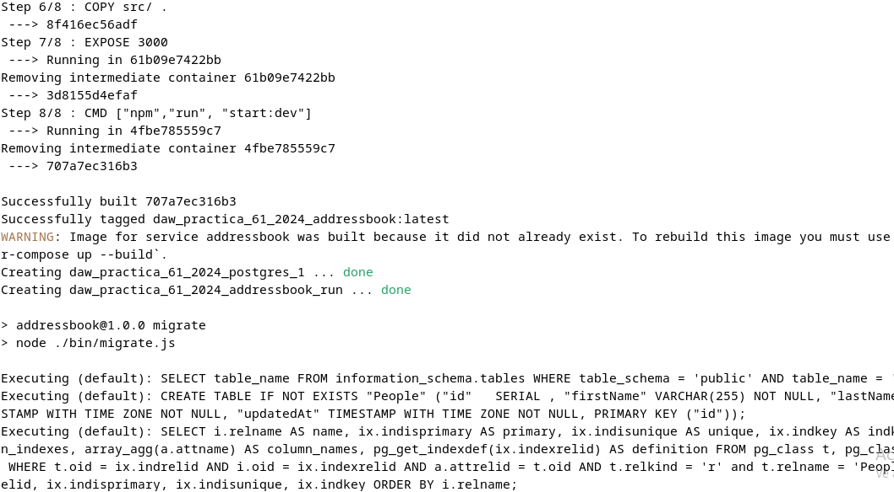
Y hecho ésto ya podemos inicializar los contenedores con el comando: sudo docker-compose up --build -d
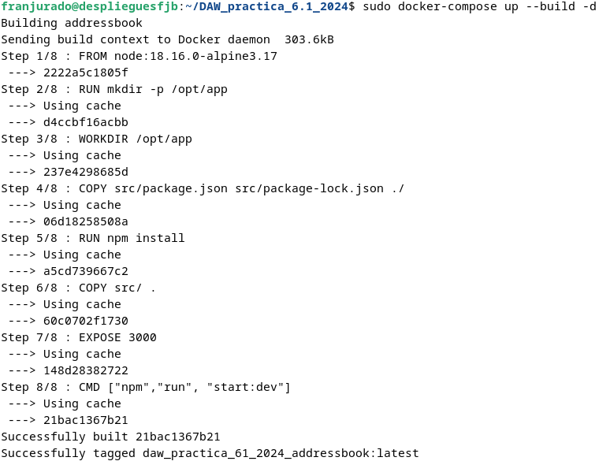
Ahora podemos hacer un test para comprobar que todo está yendo bien, y nos dará la siguiente salida en la terminal:
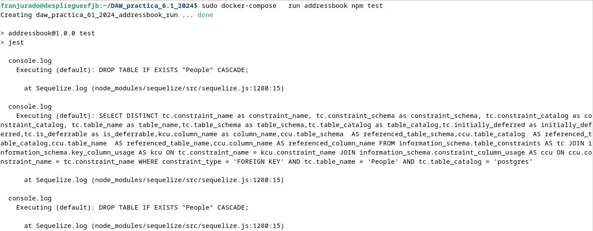 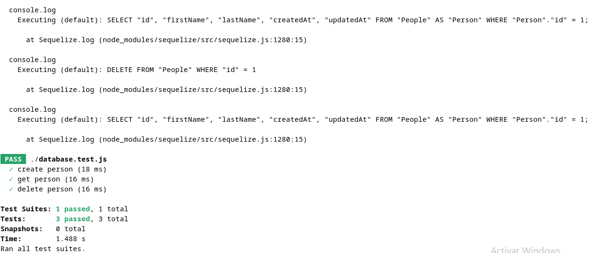
Paso previo
Para ejecutar los siguientes comando de los ejercicios hay que instalar la herramienta curl del instalador de paquetes de Debian, Ubuntu o la distribución Linux que estemos utilizando.
Si la instalamos posteriormente es posible que nos de algún error como el siguiente:
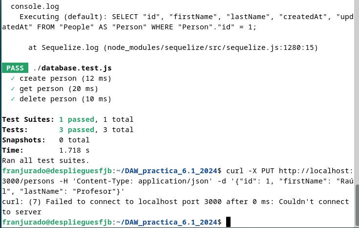
Ejercicios
Añade una persona: curl -X PUT http://localhost:3000/persons -H'Content-Type: application/json' -d '{"id": 1, "firstName": "Raúl", "lastName": "Profesor"}
Listar todas las personas: curl -X GET http://localhost:3000/persons/all -H 'Content-Type: application/json'
Buscar una persona por ID: curl -X GET http://localhost:3000/persons/1 -H 'Content-Type: application/json'
Eliminar una persona: curl -X DELETE http://localhost:3000/persons/1 -H 'Content-Type: application/json'
Si todo sale bien deberíamos tener una salida como la siguiente: